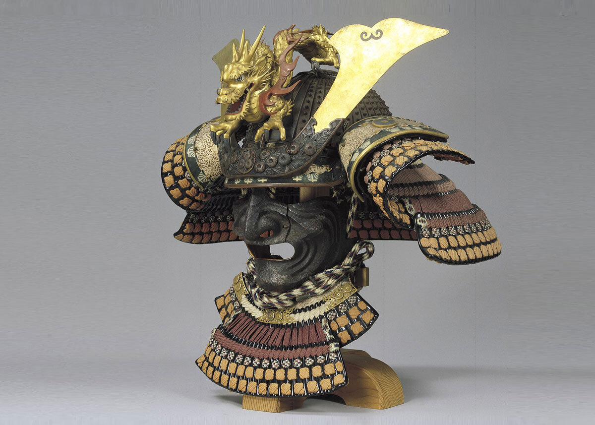

Nagađanja o tome kada je počelo naseljavanje Japana (od kineskog Žih-pen), sami Japanci svoju zemlju zovu Nihon ili Nipon, još uvek su nesigurna i različita. Zna se da je još u novom kamenom dobu tamo bilo, posvuda ali malobrojno, matrijahalno organizovanih starosedelaca, čijih potomaka, pod imenom Ainu, i danas imamo nekoliko stotina na najsevernijem ostrvu Hokaido. Oko 1000. godine p.n.e. preko ostrva Kiušu pristižu pridošlice iz Koreje. Sa juga dolaze migranti koji sa sobom nose kulturu sličnu polinežanskoj. Prvi vladari se ustoličuju oko III veka n.e. koji oko 350. n.e. otimaju od starosedeoca plodnu oblast Jamato (oko današnje Osake). Vlast je bila klanovska, organizovana po kineskom uzoru.”
Samuraj, klasa visokokvalifikovanih ratnika, postepeno se razvijala u Japanu nakon reforme Taike iz AD 646, koja je uključivala redistribuciju zemljišta i teške nove poreze namenjene podršci razrađenom carstvu u kineskom stilu. Kao rezultat toga, mnogi mali poljoprivrednici su morali da prodaju svoje zemljište i rade kao zakupci. U međuvremenu, nekoliko velikih vlasnika zemljišta nabavilo je moć i bogatstvo, stvarajući feudalni sistem sličan onom srednjevekovne Evrope , ali za razliku od Evrope, japanskim feudalnim gospodarima su bili potrebni borci za odbranu svojih bogatstava, rodivši ratnika samuraja - ili "bushi". Bilo je pitanje časti da feudalac ovlada toliko dobro oružjem da može da tuče ne samo svakog protivnika, nego i da u improvizovanom dvoboju pobedi i svakog svog samuraja. Naravno da svaki feudalac to nije uspevao da postigne, ali je iz japanske istorije poznato da su neki feudalci bili smatrani najboljim mačevaocima u celom Japanu. Jedan takav primer je Munejoši Jagju, koji je živeo u 17. veku i koji je čak i u dubokoj starosti smatran toliko dobrim borcem da su od njega zazirali ne samo njegovi mnogobrojni vazali-samuraji, nego i svi najbolji mačevaoci Japana.
Pored stalnog vežbanja u borbi mačem i drugim oružjem, održavanja fizičke spremnosti, samuraji su od rane mladosti mnogo pažnje polagali obrazovanju. I najopasniji borac mačem, i najneustrašiviji kopljanik u boju od ranog detinjstva i mladosti učio je da ispisuje i prepoznaje nekoliko hiljada kineskih ideograma, koje su, u kombinaciji sa svojom fonetskom azbukom, hiraganom i katakanom, koristili Japanci. Pored toga, poznavanje kineskih književnih klasika, kineskih filozofa, kao i dela stratega i teoretičara vojne taktike, smatralo se obaveznim za svakog dobrog samuraja.
Jedna od manje poznatih stvari o samurajima je njihov zanatski duh. Pored borbenog treninga, samuraji su vredno vežbali umetnost i zanate. Oni su bili majstori u različitim zanatima kao što su keramika, graviranje, slikanje i kaligrafija. Ovo je bilo smatrano bitnim za njihovu duhovnu i kulturnu izobličenost, i takođe im je pružalo smirenje i kontrolu nad umom.
Jedan od značajnih aspekata samurajskog života bilo je i važenje kodeksa časti poznatog kao "Bušido". Ova etička filozofija nametala je stroge moralne i etičke principe kojima su se samuraji rukovodili. Čaest i vernost, hrabrost, poštovanje i skromnost bili su osnovni stubovi Bušido kodeksa. Ove vrednosti su bile smernice samurajima u njihovom ponašanju i odnošenju prema drugima.Još jedan interesantan aspekt samuraja je njihova ljubav prema poeziji i pisanju. Samuraji su uživali u izražavanju svojih osećanja i razmišljanja kroz pesme i haiku. Ovaj oblik umetnosti bio je način da izraze svoju dušu i približe se prirodi i unutrašnjem miru.
Takođe, manje poznata činjenica je da samuraji nisu bili samo muškarci. Postojale su i samurajke, žene koje su takođe učestvovale u vojnim treninzima i imale slične vojne veštine kao i muškarci. One su dokazivale svoju spremnost i hrabrost na bojnom polju i bile jednako poštovane kao i muški samuraji. Samuraji su stvorili bogatu i interesantnu kulturu koja je preživela kroz vekove. Oni nisu bili samo borci, već istinski primeri viteza i ljudi koji su težili ka spiritualnom i ličnom razvoju. Neke od ovih manje poznatih stvari o samurajima nam pokazuju da je njihov nasled ostao upamćen kao simbol snage, časti i mudrosti.